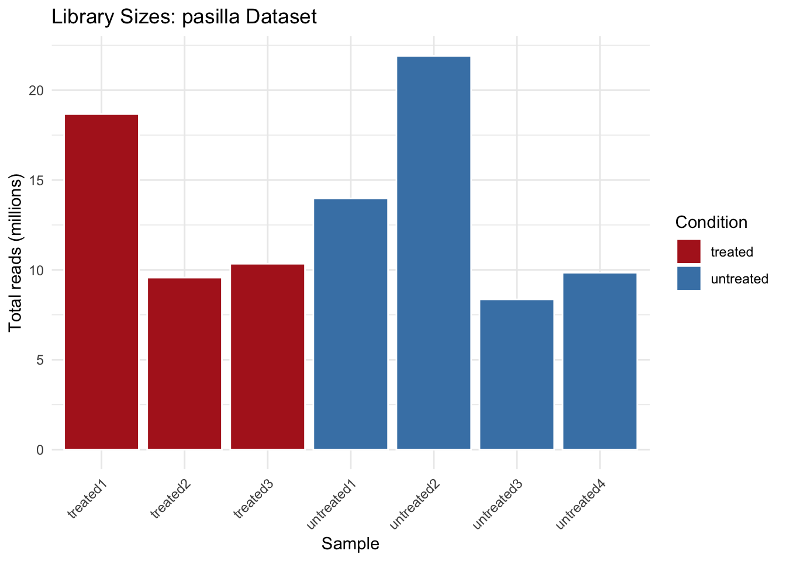

library(tidyverse)
library(this.path)
library(SummarizedExperiment)
library(DESeq2)
library(pasilla)
setwd(this.dir())Day 11 (PM) Lab: Genomics Data Exploration
SC INBRE Biostatistics Summer Intensive 2026
1 Overview
This afternoon you will practice the same quality assessment workflow from the morning lecture on a new dataset. The goal is repetition with a different example – the same questions, the same tools, a different experiment.
We will use the pasilla dataset: an RNA-seq experiment in Drosophila melanogaster (fruit fly) cells comparing samples where the pasilla gene was knocked down by RNAi to untreated controls. The pasilla gene encodes an RNA- binding protein involved in splicing regulation.
How this lab works:
- Part 1 (instructor demo, ~20 min): Follow along as we load the dataset and run through the setup together.
- Part 2 (on your own, ~70 min): Three exercises following the quality assessment checklist from the morning.
Note
If pasilla is not installed, run:
BiocManager::install("pasilla")2 Part 1: Instructor Demo
2.1 Setup
2.2 Loading the Dataset
The pasilla package ships with the count matrix and sample metadata as separate files. We load them and assemble a SummarizedExperiment the same way DESeq2 expects.
# Path to the count matrix bundled with the pasilla package
counts_file <- system.file("extdata", "pasilla_gene_counts.tsv",
package = "pasilla")
# Path to the sample metadata
meta_file <- system.file("extdata", "pasilla_sample_annotation.csv",
package = "pasilla")
# Read both files
counts <- read.table(counts_file, header = TRUE, row.names = 1) |>
as.matrix()
meta <- read.csv(meta_file, row.names = 1)# Check dimensions
dim(counts)[1] 14599 7dim(meta)[1] 7 5# The metadata row names must match the count matrix column names
# The pasilla metadata uses slightly different names -- align them
rownames(meta) <- sub("fb", "", rownames(meta))
meta <- meta[colnames(counts), ]
# Confirm alignment
identical(colnames(counts), rownames(meta))[1] TRUE# Inspect the metadata
meta condition type number.of.lanes total.number.of.reads
untreated1 untreated single-read 2 17812866
untreated2 untreated single-read 6 34284521
untreated3 untreated paired-end 2 10542625 (x2)
untreated4 untreated paired-end 2 12214974 (x2)
treated1 treated single-read 5 35158667
treated2 treated paired-end 2 12242535 (x2)
treated3 treated paired-end 2 12443664 (x2)
exon.counts
untreated1 14924838
untreated2 20764558
untreated3 10283129
untreated4 11653031
treated1 15679615
treated2 15620018
treated3 12733865The condition column encodes our treatment variable: treated (pasilla knockdown) vs. untreated (control). The type column tells us whether each library was single-read or paired-end sequencing – a potential technical variable to keep in mind.
# Build the SummarizedExperiment
se <- SummarizedExperiment(
assays = list(counts = counts),
colData = meta
)
seclass: SummarizedExperiment
dim: 14599 7
metadata(0):
assays(1): counts
rownames(14599): FBgn0000003 FBgn0000008 ... FBgn0261574 FBgn0261575
rowData names(0):
colnames(7): untreated1 untreated2 ... treated2 treated3
colData names(5): condition type number.of.lanes total.number.of.reads
exon.counts# Library sizes
tibble(
sample = colnames(se),
lib_size = colSums(assay(se)),
condition = colData(se)$condition
) |>
ggplot(aes(x = sample, y = lib_size / 1e6, fill = condition)) +
geom_col(color = "white") +
scale_fill_manual(values = c("untreated" = "steelblue",
"treated" = "firebrick")) +
labs(x = "Sample", y = "Total reads (millions)",
fill = "Condition",
title = "Library Sizes: pasilla Dataset") +
theme_minimal() +
theme(axis.text.x = element_text(angle = 45, hjust = 1))
3 Part 2: Exercises
3.1 Instructions
Step 1. Open a new Quarto document. Title it "Day 11 Lab: Genomics Data Exploration".
Step 2. Copy the setup chunk from Part 1 into your document (including the data loading and SummarizedExperiment construction steps). You need the se object to be available before starting the exercises.
Step 3. Work through Exercises 1–3. Add 2–3 sentences of interpretation after each result.
Step 4. Render when finished.
Exercise 1 – Inspect the Count Matrix and Sample Metadata.
Extract the count matrix using
assay(se)and print the first 6 rows and all columns. What do the row names represent? What do the column names represent?How many genes are in the dataset? How many samples?
Look at the sample metadata with
colData(se). How many samples are in each condition (treatedvs.untreated)? Is the experiment balanced?The
typecolumn records whether each sample was sequenced as single-read or paired-end. Check whether library type is balanced across the two conditions. Is there a potential confound here?
# your code hereExercise 2 – Count Distribution and Low-Count Filtering.
For the first sample, plot a histogram of raw counts (non-zero values only) and a histogram of
log2(count + 1). Place them side by side usinglibrary(patchwork). Describe the shape of each.How many genes have zero total counts across all samples? What fraction of all genes does this represent?
How many genes remain after filtering to those with at least 10 total counts? Filter the
seobject usingse[keep, ]and confirm the new dimensions.Make a density plot of
log2(count + 1)values, one curve per sample, colored by condition. Use the filtered dataset. Do the curves overlap closely?
# your code hereExercise 3 – PCA.
Build a
DESeqDataSetfrom the filteredseobject and apply the variance-stabilizing transformation:dds <- DESeqDataSet(se_filtered, design = ~ condition) vsd <- vst(dds, blind = TRUE)Produce a PCA plot using
plotPCA()withreturnData = TRUEand plot it manually withggplot2so you can control the colors. Color points byconditionand use a different shape fortype(single-read vs. paired-end).Which principal component separates the treatment groups? How much of the total variance does it capture?
Does library type (
type) appear to drive any separation in the PCA? What would it mean if technical variables dominated the plot instead of the biological treatment?
# your code here